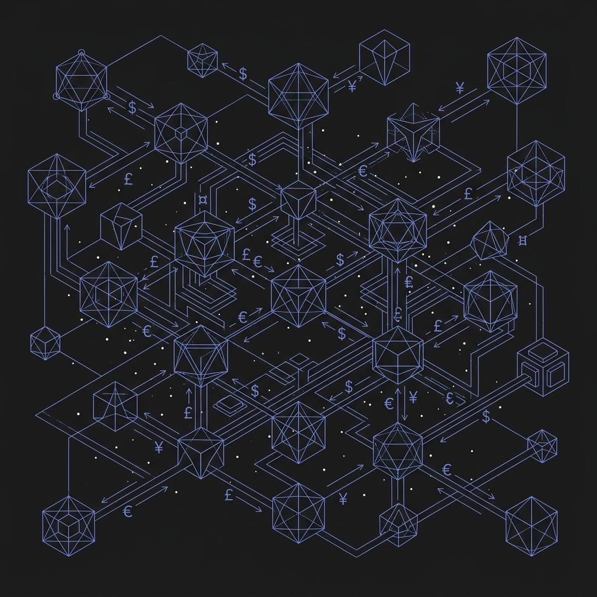

Simulation & Agent-Based Systems
Post-AGI Digital Economy Simulation
Built a large-scale agent-based simulation modeling autonomous economic actors in post-AGI tokenised economies. The framework introduces reputation currencies and tokenized attention markets as coordination primitives, then explores policy interventions for wealth distribution dynamics.
result: −34% wealth concentration under targeted policy
stack: Agent-Based Modeling, Simulation Design, Tokenomics
